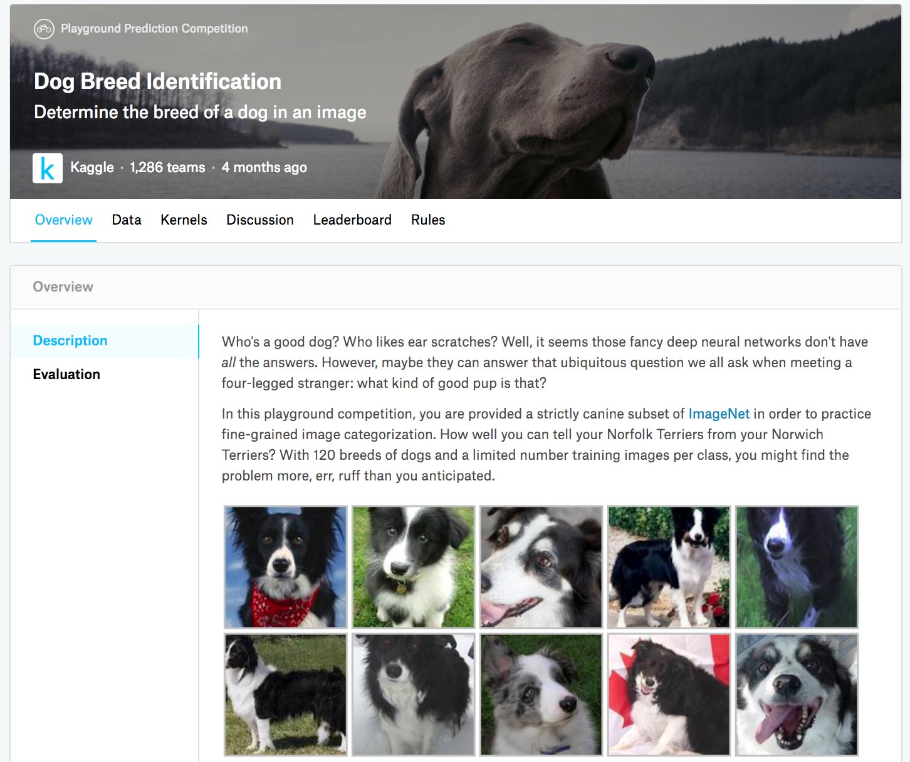

14.14. Kaggle 上的狗品种识别（ImageNet 中的狗）¶
在本节中，我们将实践 Kaggle 上的狗品种识别问题。该竞赛的网址是 https://www.kaggle.com/c/dog-breed-identification
在这次竞赛中， 需要识别 120 个不同品种的狗。 事实上， 这次竞赛的数据集 是 ImageNet 数据集的一个子集。 与 14.13节 中 CIFAR-10 数据集的图像不同， ImageNet 数据集中的图像尺寸各不相同，高度和宽度都更大。 图14.14.1 展示了竞赛网页上的信息。你需要一个 Kaggle 账号 才能提交结果。


图14.14.1 狗品种识别竞赛网站。点击”Data”标签页即可获取竞赛数据集。¶
import os
import torch
import torchvision
from torch import nn
from d2l import torch as d2l
import os
from mxnet import autograd, gluon, init, npx
from mxnet.gluon import nn
from d2l import mxnet as d2l
npx.set_np()
14.14.1. 获取并组织数据集¶
竞赛数据集被划分为训练集和测试集，分别包含 10222 张和 10357 张 三个 RGB（彩色）通道的 JPEG 图像。 在训练数据集中， 有 120 个品种的狗， 例如拉布拉多犬、贵宾犬、腊肠犬、萨摩耶、哈士奇、吉娃娃和约克夏梗。
14.14.1.1. 下载数据集¶
登录 Kaggle 后， 你可以点击 图14.14.1 所示的
竞赛网页上的”Data”标签页，并通过点击”Download All”按钮下载数据集。
在../data中解压下载的文件后，你将在以下路径中找到整个数据集：
../data/dog-breed-identification/labels.csv
../data/dog-breed-identification/sample_submission.csv
../data/dog-breed-identification/train
../data/dog-breed-identification/test
你可能已经注意到，上述结构与 14.13节 中 CIFAR-10
竞赛的结构相似，
其中文件夹train/和test/分别包含训练狗图像和测试狗图像，而labels.csv包含
训练图像的标签。
同样，为了让入门更容易，我们提供了上述数据集的一个小样本：train_valid_test_tiny.zip。
如果你要使用 Kaggle
竞赛的完整数据集，需要将下面的demo变量改为False。
#@save
d2l.DATA_HUB['dog_tiny'] = (d2l.DATA_URL + 'kaggle_dog_tiny.zip',
'0cb91d09b814ecdc07b50f31f8dcad3e81d6a86d')
# If you use the full dataset downloaded for the Kaggle competition, change
# the variable below to `False`
demo = True
if demo:
data_dir = d2l.download_extract('dog_tiny')
else:
data_dir = os.path.join('..', 'data', 'dog-breed-identification')
#@save
d2l.DATA_HUB['dog_tiny'] = (d2l.DATA_URL + 'kaggle_dog_tiny.zip',
'0cb91d09b814ecdc07b50f31f8dcad3e81d6a86d')
# If you use the full dataset downloaded for the Kaggle competition, change
# the variable below to `False`
demo = True
if demo:
data_dir = d2l.download_extract('dog_tiny')
else:
data_dir = os.path.join('..', 'data', 'dog-breed-identification')
14.14.1.2. 组织数据集¶
我们可以像 14.13节 中那样组织数据集，即从原始训练集中 划分出验证集，并将图像按标签分组移入子文件夹。
下面的reorg_dog_data函数读取
训练数据标签，划分出验证集，并组织训练集。
def reorg_dog_data(data_dir, valid_ratio):
labels = d2l.read_csv_labels(os.path.join(data_dir, 'labels.csv'))
d2l.reorg_train_valid(data_dir, labels, valid_ratio)
d2l.reorg_test(data_dir)
batch_size = 32 if demo else 128
valid_ratio = 0.1
reorg_dog_data(data_dir, valid_ratio)
def reorg_dog_data(data_dir, valid_ratio):
labels = d2l.read_csv_labels(os.path.join(data_dir, 'labels.csv'))
d2l.reorg_train_valid(data_dir, labels, valid_ratio)
d2l.reorg_test(data_dir)
batch_size = 32 if demo else 128
valid_ratio = 0.1
reorg_dog_data(data_dir, valid_ratio)
14.14.2. 图像增广¶
回想一下，这个狗品种数据集 是 ImageNet 数据集的一个子集， 其图像 比 14.13节 中 CIFAR-10 数据集的图像更大。 下面 列出了一些 可能对较大的图像有用的图像增广操作。
transform_train = torchvision.transforms.Compose([
# Randomly crop the image to obtain an image with an area of 0.08 to 1 of
# the original area and height-to-width ratio between 3/4 and 4/3. Then,
# scale the image to create a new 224 x 224 image
torchvision.transforms.RandomResizedCrop(224, scale=(0.08, 1.0),
ratio=(3.0/4.0, 4.0/3.0)),
torchvision.transforms.RandomHorizontalFlip(),
# Randomly change the brightness, contrast, and saturation
torchvision.transforms.ColorJitter(brightness=0.4,
contrast=0.4,
saturation=0.4),
# Add random noise
torchvision.transforms.ToTensor(),
# Standardize each channel of the image
torchvision.transforms.Normalize([0.485, 0.456, 0.406],
[0.229, 0.224, 0.225])])
transform_train = gluon.data.vision.transforms.Compose([
# Randomly crop the image to obtain an image with an area of 0.08 to 1 of
# the original area and height-to-width ratio between 3/4 and 4/3. Then,
# scale the image to create a new 224 x 224 image
gluon.data.vision.transforms.RandomResizedCrop(224, scale=(0.08, 1.0),
ratio=(3.0/4.0, 4.0/3.0)),
gluon.data.vision.transforms.RandomFlipLeftRight(),
# Randomly change the brightness, contrast, and saturation
gluon.data.vision.transforms.RandomColorJitter(brightness=0.4,
contrast=0.4,
saturation=0.4),
# Add random noise
gluon.data.vision.transforms.RandomLighting(0.1),
gluon.data.vision.transforms.ToTensor(),
# Standardize each channel of the image
gluon.data.vision.transforms.Normalize([0.485, 0.456, 0.406],
[0.229, 0.224, 0.225])])
在预测时， 我们只使用不带随机性的 图像预处理操作。
transform_test = torchvision.transforms.Compose([
torchvision.transforms.Resize(256),
# Crop a 224 x 224 square area from the center of the image
torchvision.transforms.CenterCrop(224),
torchvision.transforms.ToTensor(),
torchvision.transforms.Normalize([0.485, 0.456, 0.406],
[0.229, 0.224, 0.225])])
transform_test = gluon.data.vision.transforms.Compose([
gluon.data.vision.transforms.Resize(256),
# Crop a 224 x 224 square area from the center of the image
gluon.data.vision.transforms.CenterCrop(224),
gluon.data.vision.transforms.ToTensor(),
gluon.data.vision.transforms.Normalize([0.485, 0.456, 0.406],
[0.229, 0.224, 0.225])])
14.14.3. 读取数据集¶
与 14.13节 中一样， 我们可以读取由原始图像文件组成的 已组织数据集。
train_ds, train_valid_ds = [torchvision.datasets.ImageFolder(
os.path.join(data_dir, 'train_valid_test', folder),
transform=transform_train) for folder in ['train', 'train_valid']]
valid_ds, test_ds = [torchvision.datasets.ImageFolder(
os.path.join(data_dir, 'train_valid_test', folder),
transform=transform_test) for folder in ['valid', 'test']]
train_ds, valid_ds, train_valid_ds, test_ds = [
gluon.data.vision.ImageFolderDataset(
os.path.join(data_dir, 'train_valid_test', folder))
for folder in ('train', 'valid', 'train_valid', 'test')]
下面我们以 与 14.13节 相同的方式 创建数据迭代器实例。
train_iter, train_valid_iter = [torch.utils.data.DataLoader(
dataset, batch_size, shuffle=True, drop_last=True)
for dataset in (train_ds, train_valid_ds)]
valid_iter = torch.utils.data.DataLoader(valid_ds, batch_size, shuffle=False,
drop_last=True)
test_iter = torch.utils.data.DataLoader(test_ds, batch_size, shuffle=False,
drop_last=False)
train_iter, train_valid_iter = [gluon.data.DataLoader(
dataset.transform_first(transform_train), batch_size, shuffle=True,
last_batch='discard') for dataset in (train_ds, train_valid_ds)]
valid_iter = gluon.data.DataLoader(
valid_ds.transform_first(transform_test), batch_size, shuffle=False,
last_batch='discard')
test_iter = gluon.data.DataLoader(
test_ds.transform_first(transform_test), batch_size, shuffle=False,
last_batch='keep')
14.14.4. 微调预训练模型¶
同样， 这次竞赛的数据集是 ImageNet 数据集的一个子集。 因此，我们可以使用 14.2节 中讨论的方法， 选择一个在完整 ImageNet 数据集上 预训练的模型，用它提取图像特征，再馈送到 自定义的小规模输出网络中。 深度学习框架的高级 API 提供了大量 在 ImageNet 数据集上预训练的模型。 这里，我们选择 一个预训练的 ResNet-34 模型， 直接复用 该模型输出层的输入 （即提取出的 特征）。 然后我们可以用一个可训练的小型自定义 输出网络替换原来的输出层， 例如堆叠两个 全连接层。 与 14.2节 中的实验不同， 下面的做法 不重新训练用于特征提取的 预训练模型。这减少了训练时间 以及存储梯度所需的内存。
回想一下，我们 使用完整 ImageNet 数据集三个 RGB 通道的 均值和标准差对图像进行了标准化。 事实上， 这也与预训练模型 在 ImageNet 上所做的标准化操作一致。
def get_net(devices):
finetune_net = nn.Sequential()
finetune_net.features = torchvision.models.resnet34(pretrained=True)
# Define a new output network (there are 120 output categories)
finetune_net.output_new = nn.Sequential(nn.Linear(1000, 256),
nn.ReLU(),
nn.Linear(256, 120))
# Move the model to devices
finetune_net = finetune_net.to(devices[0])
# Freeze parameters of feature layers
for param in finetune_net.features.parameters():
param.requires_grad = False
return finetune_net
def get_net(devices):
finetune_net = gluon.model_zoo.vision.resnet34_v2(pretrained=True)
# Define a new output network
finetune_net.output_new = nn.HybridSequential(prefix='')
finetune_net.output_new.add(nn.Dense(256, activation='relu'))
# There are 120 output categories
finetune_net.output_new.add(nn.Dense(120))
# Initialize the output network
finetune_net.output_new.initialize(init.Xavier(), ctx=devices)
# Distribute the model parameters to the CPUs or GPUs used for computation
finetune_net.collect_params().reset_ctx(devices)
return finetune_net
在计算损失之前， 我们先获得预训练模型输出层的输入，即提取出的特征。 然后我们将该特征作为小型自定义输出网络的输入来计算损失。
loss = nn.CrossEntropyLoss(reduction='none')
def evaluate_loss(data_iter, net, devices):
l_sum, n = 0.0, 0
for features, labels in data_iter:
features, labels = features.to(devices[0]), labels.to(devices[0])
outputs = net(features)
l = loss(outputs, labels)
l_sum += l.sum()
n += labels.numel()
return l_sum / n
loss = gluon.loss.SoftmaxCrossEntropyLoss()
def evaluate_loss(data_iter, net, devices):
l_sum, n = 0.0, 0
for features, labels in data_iter:
X_shards, y_shards = d2l.split_batch(features, labels, devices)
output_features = [net.features(X_shard) for X_shard in X_shards]
outputs = [net.output_new(feature) for feature in output_features]
ls = [loss(output, y_shard).sum() for output, y_shard
in zip(outputs, y_shards)]
l_sum += sum([float(l.sum()) for l in ls])
n += labels.size
return l_sum / n
14.14.5. 定义训练函数¶
我们将根据模型在验证集上的表现来选择模型并调超参数。模型训练函数train只
迭代小型自定义输出网络的参数。
def train(net, train_iter, valid_iter, num_epochs, lr, wd, devices, lr_period,
lr_decay):
# Only train the small custom output network
net = nn.DataParallel(net, device_ids=devices).to(devices[0])
trainer = torch.optim.SGD((param for param in net.parameters()
if param.requires_grad), lr=lr,
momentum=0.9, weight_decay=wd)
scheduler = torch.optim.lr_scheduler.StepLR(trainer, lr_period, lr_decay)
num_batches, timer = len(train_iter), d2l.Timer()
legend = ['train loss']
if valid_iter is not None:
legend.append('valid loss')
animator = d2l.Animator(xlabel='epoch', xlim=[1, num_epochs],
legend=legend)
for epoch in range(num_epochs):
metric = d2l.Accumulator(2)
for i, (features, labels) in enumerate(train_iter):
timer.start()
features, labels = features.to(devices[0]), labels.to(devices[0])
trainer.zero_grad()
output = net(features)
l = loss(output, labels).sum()
l.backward()
trainer.step()
metric.add(l, labels.shape[0])
timer.stop()
if (i + 1) % (num_batches // 5) == 0 or i == num_batches - 1:
animator.add(epoch + (i + 1) / num_batches,
(metric[0] / metric[1], None))
measures = f'train loss {metric[0] / metric[1]:.3f}'
if valid_iter is not None:
valid_loss = evaluate_loss(valid_iter, net, devices)
animator.add(epoch + 1, (None, valid_loss.detach().cpu()))
scheduler.step()
if valid_iter is not None:
measures += f', valid loss {valid_loss:.3f}'
print(measures + f'\n{metric[1] * num_epochs / timer.sum():.1f}'
f' examples/sec on {str(devices)}')
def train(net, train_iter, valid_iter, num_epochs, lr, wd, devices, lr_period,
lr_decay):
# Only train the small custom output network
trainer = gluon.Trainer(net.output_new.collect_params(), 'sgd',
{'learning_rate': lr, 'momentum': 0.9, 'wd': wd})
num_batches, timer = len(train_iter), d2l.Timer()
legend = ['train loss']
if valid_iter is not None:
legend.append('valid loss')
animator = d2l.Animator(xlabel='epoch', xlim=[1, num_epochs],
legend=legend)
for epoch in range(num_epochs):
metric = d2l.Accumulator(2)
if epoch > 0 and epoch % lr_period == 0:
trainer.set_learning_rate(trainer.learning_rate * lr_decay)
for i, (features, labels) in enumerate(train_iter):
timer.start()
X_shards, y_shards = d2l.split_batch(features, labels, devices)
output_features = [net.features(X_shard) for X_shard in X_shards]
with autograd.record():
outputs = [net.output_new(feature)
for feature in output_features]
ls = [loss(output, y_shard).sum() for output, y_shard
in zip(outputs, y_shards)]
for l in ls:
l.backward()
trainer.step(batch_size)
metric.add(sum([float(l.sum()) for l in ls]), labels.shape[0])
timer.stop()
if (i + 1) % (num_batches // 5) == 0 or i == num_batches - 1:
animator.add(epoch + (i + 1) / num_batches,
(metric[0] / metric[1], None))
if valid_iter is not None:
valid_loss = evaluate_loss(valid_iter, net, devices)
animator.add(epoch + 1, (None, valid_loss))
measures = f'train loss {metric[0] / metric[1]:.3f}'
if valid_iter is not None:
measures += f', valid loss {valid_loss:.3f}'
print(measures + f'\n{metric[1] * num_epochs / timer.sum():.1f}'
f' examples/sec on {str(devices)}')
14.14.6. 训练并验证模型¶
现在我们可以训练并验证模型了。 以下超参数都是可调的。
例如，可以增加轮数。由于lr_period和lr_decay分别设置为 2
和 0.9，优化算法的学习率将每经过 2 轮乘以 0.9。
devices, num_epochs, lr, wd = d2l.try_all_gpus(), 10, 1e-4, 1e-4
lr_period, lr_decay, net = 2, 0.9, get_net(devices)
train(net, train_iter, valid_iter, num_epochs, lr, wd, devices, lr_period,
lr_decay)
devices, num_epochs, lr, wd = d2l.try_all_gpus(), 10, 5e-3, 1e-4
lr_period, lr_decay, net = 2, 0.9, get_net(devices)
net.hybridize()
train(net, train_iter, valid_iter, num_epochs, lr, wd, devices, lr_period,
lr_decay)
14.14.7. 对测试集进行分类并在 Kaggle 上提交结果¶
与 14.13节 中的最后一步类似， 最后所有带标签的数据（包括验证集）都用于训练模型并对测试集进行分类。 我们将使用训练好的自定义输出网络 进行分类。
net = get_net(devices)
train(net, train_valid_iter, None, num_epochs, lr, wd, devices, lr_period,
lr_decay)
preds = []
for data, label in test_iter:
output = torch.nn.functional.softmax(net(data.to(devices[0])), dim=1)
preds.extend(output.cpu().detach().numpy())
ids = sorted(os.listdir(
os.path.join(data_dir, 'train_valid_test', 'test', 'unknown')))
with open('submission.csv', 'w') as f:
f.write('id,' + ','.join(train_valid_ds.classes) + '\n')
for i, output in zip(ids, preds):
f.write(i.split('.')[0] + ',' + ','.join(
[str(num) for num in output]) + '\n')
net = get_net(devices)
net.hybridize()
train(net, train_valid_iter, None, num_epochs, lr, wd, devices, lr_period,
lr_decay)
preds = []
for data, label in test_iter:
output_features = net.features(data.as_in_ctx(devices[0]))
output = npx.softmax(net.output_new(output_features))
preds.extend(output.asnumpy())
ids = sorted(os.listdir(
os.path.join(data_dir, 'train_valid_test', 'test', 'unknown')))
with open('submission.csv', 'w') as f:
f.write('id,' + ','.join(train_valid_ds.synsets) + '\n')
for i, output in zip(ids, preds):
f.write(i.split('.')[0] + ',' + ','.join(
[str(num) for num in output]) + '\n')
上面的代码 将生成一个submission.csv文件， 用于按照
5.7节 中描述的相同方式 提交给 Kaggle。
14.14.8. 小结¶
ImageNet 数据集中的图像比 CIFAR-10 图像更大（且尺寸各不相同）。对于不同数据集上的任务，我们可能需要修改图像增广操作。
为了对 ImageNet 数据集的一个子集进行分类，我们可以利用在完整 ImageNet 数据集上预训练的模型来提取特征，并且只训练一个小规模的自定义输出网络。这将减少计算时间和内存开销。
14.14.9. 练习¶
使用完整的 Kaggle 竞赛数据集时，如果增大
batch_size（批量大小）和num_epochs（轮数），并将其他一些超参数设为lr = 0.01、lr_period = 10和lr_decay = 0.1，你能取得怎样的结果？如果使用更深的预训练模型，你会得到更好的结果吗？你如何调超参数？你能进一步提高结果吗？